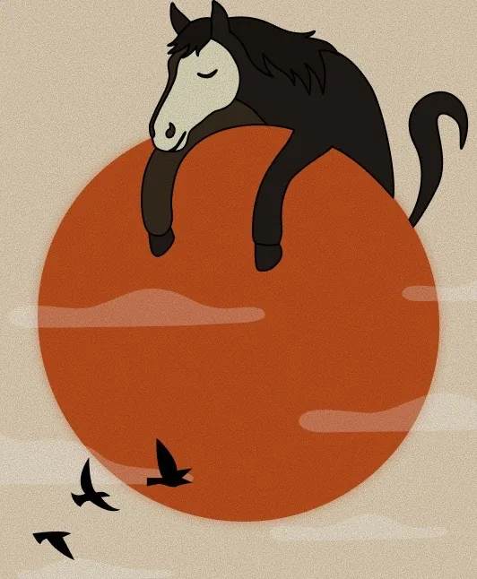
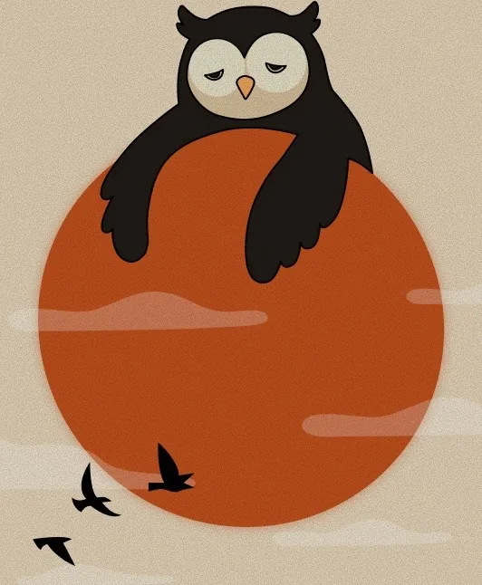
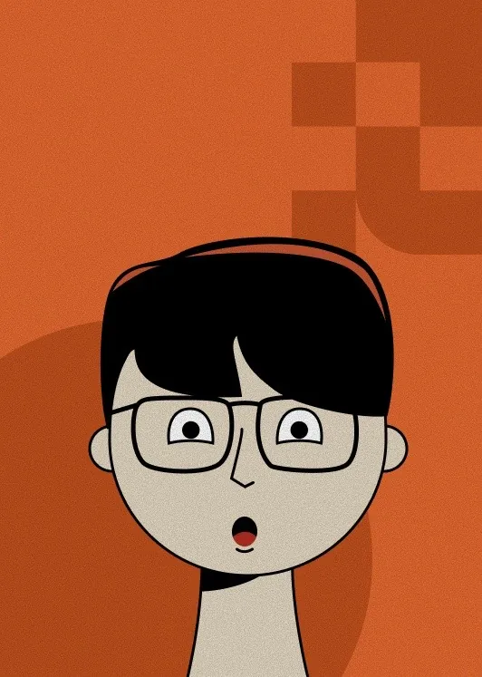
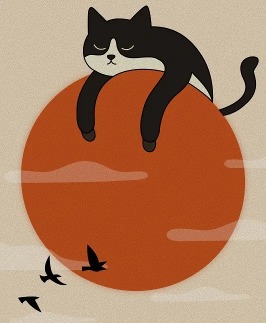
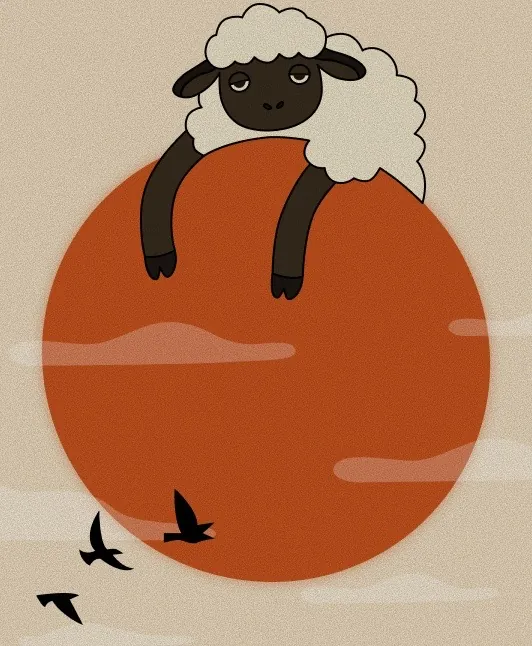
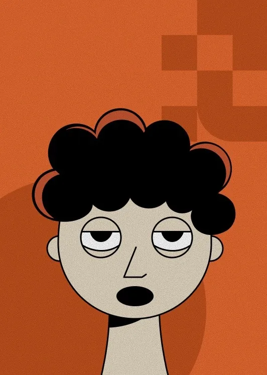
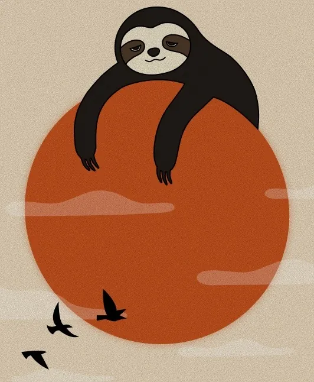
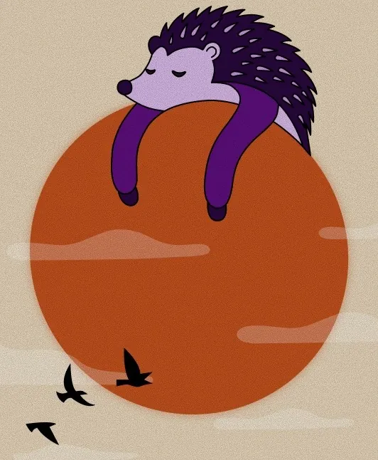
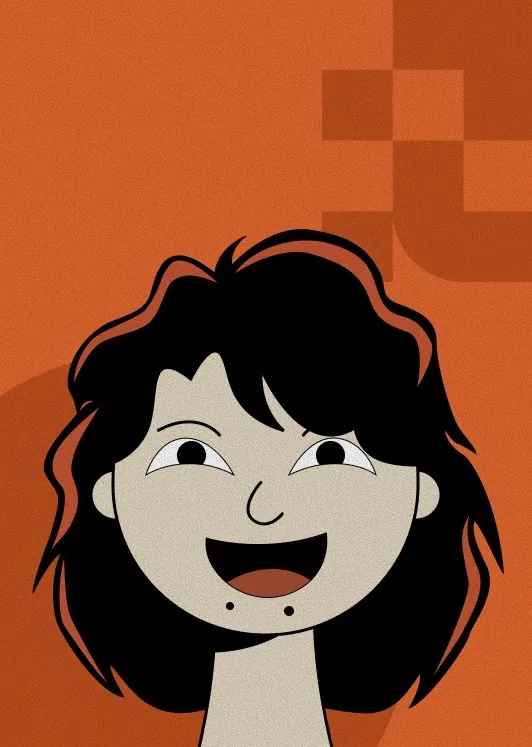

Mengatur linimasa studio, strategi pameran, dan koordinasi pengiriman lintas disiplin.
Lahir di Apple Developer Academy @ BINUS, BSD City, tim beranggotakan enam orang kami memadukan kriya fisik, hardware Matter tertanam, dan aplikasi iOS untuk membangun objek harian yang lebih tenang.
Foto meja kerja studio & tim di Apple Developer Academy @ BINUS
Potret 4:5 (1200x1500 px) · Batu basalt vulkanik, kayu jati, dan prototipe
Respon sentuhan yang tepat, sudut cahaya bebas silau, dan lantai suara tenang di 28 dB jauh lebih berarti daripada menumpuk daftar spesifikasi.
Pemodelan industrial, akustik, takaran aroma, firmware Matter ESP32-C6, SwiftUI iOS, dan keandalan infrastruktur dikerjakan berdampingan.
Kami bekerja dengan batu basalt vulkanik, kayu jati reklamasi Jawa, kisi Batik Kawung, serta botani Nusantara untuk ruang hunian modern yang ringkas.
Setiap gagasan kami bawa cepat dari sketsa meja menuju rangka fisik dan rilis aktif di Apple TestFlight.
6
Pembuat Lintas Disiplin
4
Bidang Inti
BSD City
Apple Developer Academy @ BINUS
Arahkan atau ketuk kartu untuk melihat potret.

Mengatur linimasa studio, strategi pameran, dan koordinasi pengiriman lintas disiplin.


Memegang arah produk, kalibrasi pengalaman indra, dan sintesis riset pengguna.

Membentuk desain industrial fisik, tekstur material, serta interaksi taktil.


Merancang antarmuka aplikasi Temaram, sistem visual, dan ilustrasi studio.

Membangun aplikasi iOS pendamping Temaram dan integrasi ekosistem Apple.


Menjaga keandalan infrastruktur, stabilitas koneksi, dan alur deployment.